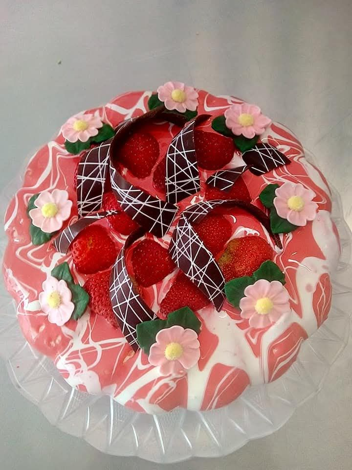
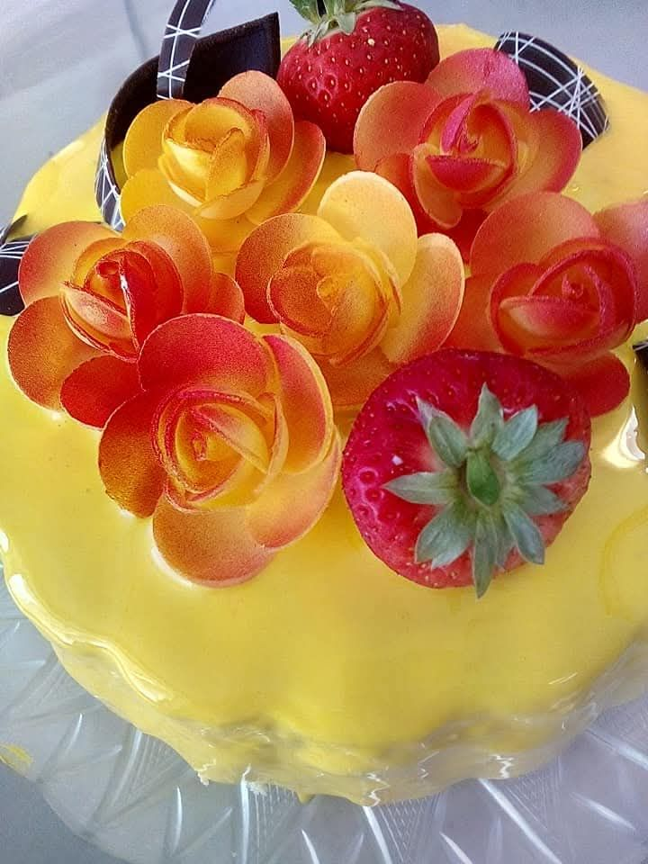
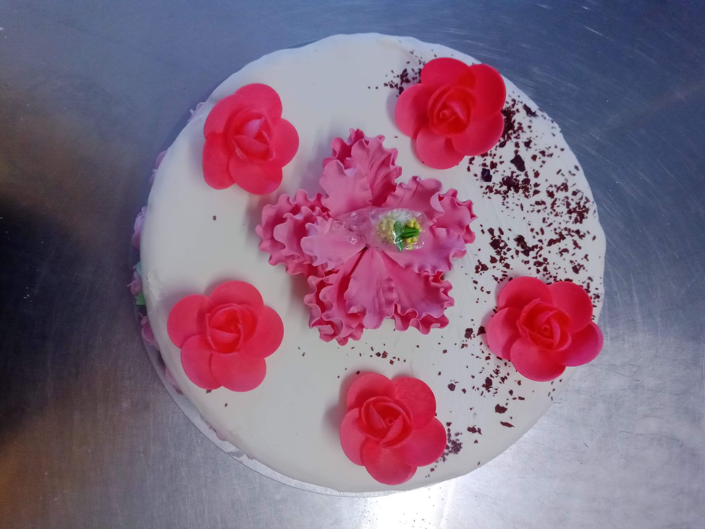
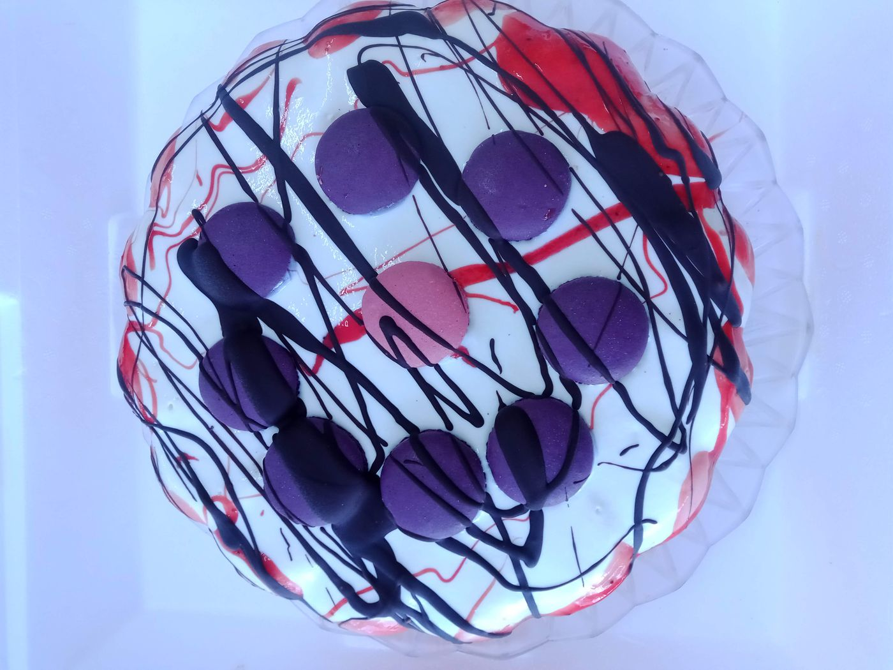
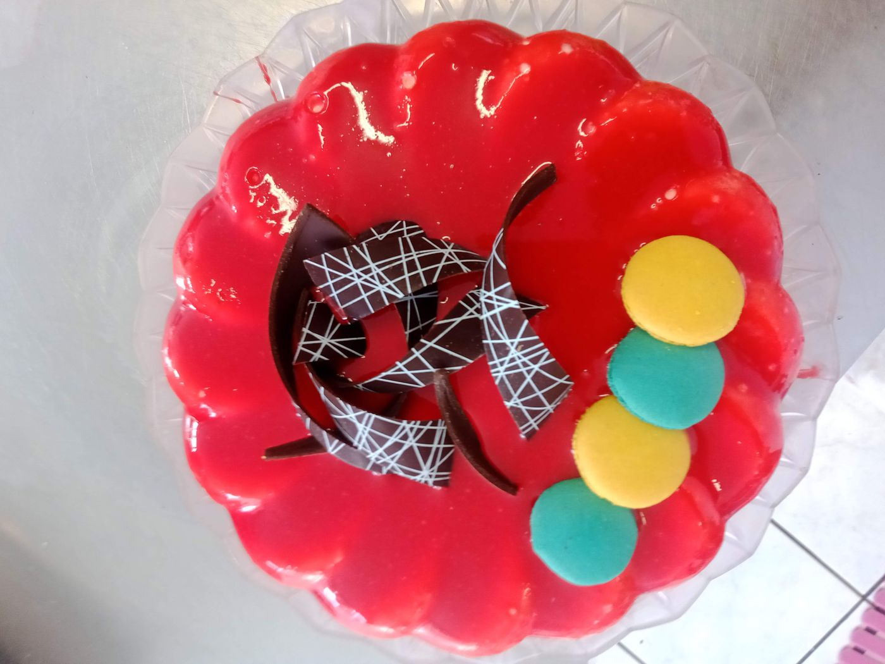
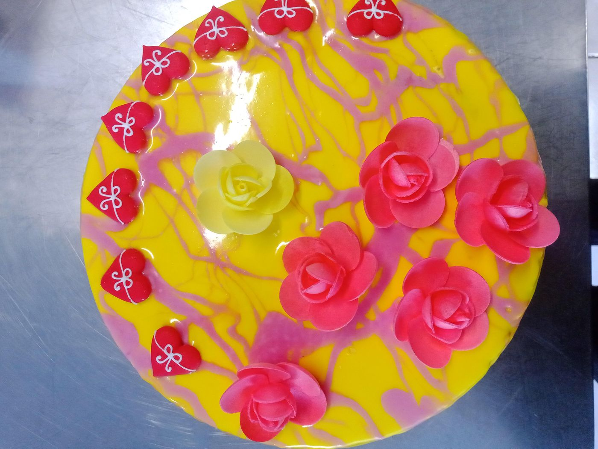
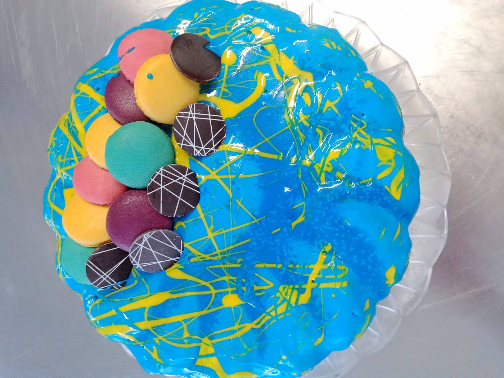
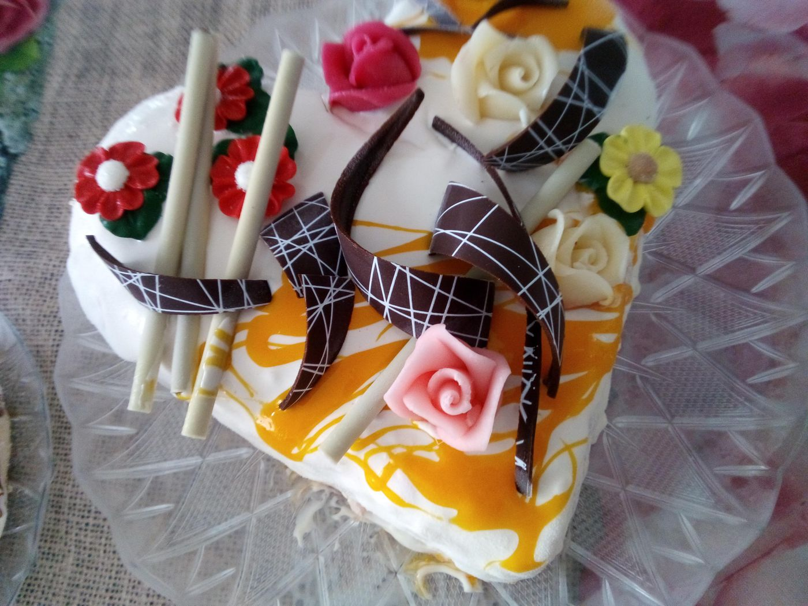

🎂 Torte gelato

Come si costruisce una torta gelato
Una torta gelato ben riuscita è prima di tutto una questione di equilibrio tra strati: ogni componente (basi, glasse, croccanti, bagne) contribuisce alla struttura finale e al modo in cui il prodotto si taglia e si scongela.
- Base/i di gelato: di solito 2-3 gusti diversi, scelti anche per contrasto di colore e consistenza (es. una base latte e una base frutta o cioccolato).
- Strato croccante: biscotto sbriciolato, wafer, pralinato o granella, spesso legato con burro di cacao o cioccolato per restare croccante anche da congelato.
- Variegature e glasse: aggiungono contrasto di sapore e un effetto visivo alle fette; vanno dosate per non appesantire troppo la struttura.
- Finitura esterna: glassa a specchio, spray effetto vellutato, o semplice glassatura — soprattutto una questione di presentazione e di conservazione in vetrina.
Cosa serve e come si fa, passo dopo passo
Attrezzatura e ingredienti necessari: un abbattitore di temperatura, stampi/forme in silicone, una glassa già pronta (oppure una miscela per glassa al cioccolato da preparare), un mixer/frullatore anche solo da casa — e pazienza, perché tra un passaggio e l'altro si aspetta parecchio.

Il procedimento che uso io, usando come esempio una forma in silicone:
- Metto la forma in silicone (vuota) in abbattitore per 10 minuti.
- Nel frattempo monto circa 400 g di panna, integro circa 30 g di destrosio e mescolo lentamente, cercando di far uscire aria dalla panna mentre monto (l'obiettivo è una panna ben ferma ma senza troppa aria incorporata).
- Estraggo la forma dall'abbattitore e stendo uno strato sottile di panna su tutta la superficie interna dello stampo; rimetto in abbattitore per 10-15 minuti.
- Nel frattempo prendo il gelato del primo strato e lo lascio ammorbidire un po'.
- Estraggo la forma e inserisco il primo strato di gelato, poi di nuovo in abbattitore per 15 minuti.
- Ripeto lo stesso passaggio per il secondo e il terzo strato.
- Tra uno strato e l'altro si può inserire della gramella o del variegato — ma non su tutta la superficie: rischia di far scivolare gli strati tra loro.
- Lascio in abbattitore finché la sonda al cuore della torta non segna -20/-25°C.
- Nel frattempo ho già preparato la glassa.
- Estraggo la torta dall'abbattitore e la posiziono su un fondo: consiglio di bagnarlo con una bagna, oppure usare un fondo biscottato.
- Verso la glassa, che deve essere a temperatura ambiente.
- Decoro subito, oppure faccio altri 5 minuti di abbattitore prima di decorare.
- Lascio in abbattitore fino al completo congelamento, poi conservo la torta in un congelatore statico, non ventilato (in uno ventilato la torta perde volume).
Due consigli pratici: invece di tre strati piatti sovrapposti uno sull'altro, spesso viene meglio creare un'isola al centro con un gusto diverso — visivamente e al taglio fa un'ottima figura. E se usi il frullatore per mescolare un aroma o un colorante nella glassa, tieni sempre la testa del frullatore ferma sul fondo del contenitore: eviti così di incorporare aria, lo stesso principio della panna montata lentamente.
Errori comuni da evitare
- Basi troppo dure o troppo morbide rispetto agli strati adiacenti, che rendono difficile il taglio a temperatura di servizio.
- Eccesso di parti liquide/variegature che ghiacciano creando cristalli sgradevoli al palato.
- Scongelamento non uniforme: una torta va sempre riportata a temperatura di servizio (di solito -14/-16°C) prima di essere tagliata e servita.
Per scegliere le basi più adatte a una torta gelato, usa il confronto prodotti qui sul sito per valutare PAC, POD e solidi totali fianco a fianco.
📸 Idee e decorazioni per torte gelato
Una raccolta di decorazioni per torte gelato che ho realizzato negli anni: fiori in pasta di zucchero, nastri e dischi di cioccolato, macaron, frutta fresca e glasse marmorizzate — spunti concreti per decorare una torta gelato applicando i principi di strati, croccanti e finiture descritti qui sopra.















